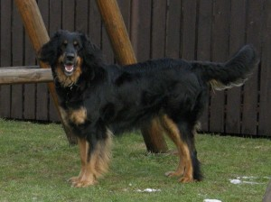
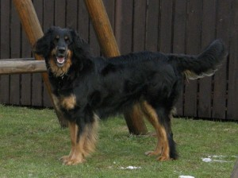

Ch. BLEYS Folcrum
Narodená: 01.06.2005
Dátum úmrtia: 11.9.2019
 

Výška: 61,5 cm Hmotnosť: 34,5kg
Výstavné ocenenia: 14xV1, 2xCAJC, 10xCAC, 2xres.CAC, 2xCACIB, 2xres.CACIB, 2xBOB
Víťaz Špeciálnej výstavy SHK 2010, Čakateľ šampióna IHF 2010, Klubový víťaz 2013, Čakateľ šampióna IHF 2013 - Klubová výstava Dolný Kubín 27.4.2013 .
Tituly: Slovenský šampión krásy mladých, Slovenský šampión krásy, Klubový šampión.
RTG: HD A
očné vyšetrenie: negat.
Working DogVÝSTAVY Bleys Folcrum:
28.1.2007 - MVP Trenčín - V1, CAC, CACIB, BOB - rozhodoval p. T. Havelka
3.06.2007- MVP Nitra - V2, r.CAC, r.CACIB
15.07.2007- NV Košice - V2, r.CAC
26.08.2007- Špeciálna výstava SHK Varín - tr. otvorená - V3 z konkurencie 16 zúčastnených súk. Rozhodovala holandská PANI rozhodkyňa: Ans Schellekens
20.4.2008 Klubová výstava SHK Bojnice - tr. otvorená - výborná - rozhodovala nemecká odborníčka: Sigrid Darting Etemenn
13.7.08 - NVP Košice - trieda otvorená - V1,CAC (6 súk v triede) rozhodovala MVDr. Gabriela Ridarčíková.
16.8. 08 - MVP Bratislava - trieda otvorená - V1, CAC, r.CACIB rozhodovala MVDr. G. Ridarčíková (SK)
17.8. 08 - MVP Bratislava - trieda otvorená - V1, CAC, CACIB rozhodovala Mach Lisbeth (CH)
24.8.08 - Špeciálna výstava SHK Varín - trieda otvorená - výborná, rozhodovala p. E. Škvarilová
2.11.08 - Medzinárodná výstava psov NITRA CANIS - tr. otvorená - výborná, rozhodovala p. Ruskovaara.
25.4.2009 - Klubová výstava SHK Bojnice - tr. otvorená - výborná, rozhodovala p. E. Škvařilová
12.7.2009 - Celoštátna výstava psov Košice - trieda otvorená - V1, CAC, BOB. Rozhodoval p. T. Havelka.
23.8.2009 - Špeciálna výstava SHK Lomnistá - trieda víťazov - V1, CAC, rozhodoval p. L. Novák.
10.11.2009 - World Dog Show Bratislava - Champion class - excellent, rozhodoval p. Fischer.
22.8.2010 - Špeciálna výstava SHK Varín - trieda víťazov - V1, CAC, Víťaz Špeciálnej výstavy, Čakateľ šampióna IHF.
Matka: Dara z Krovia
Narodená: 2.1.2001
HD-A
Otec: Ch. OZI Las Ksiezniczek
Narodený: 24.10.2002
DBK 0/0 DLK 0/0
Skúšky: ZZO, ZOP, ZPU 1